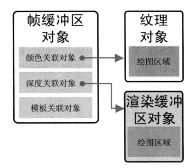

帧缓冲区对象
webgl 每次绘制的后都把颜色存储了到了颜色缓冲区，同时如果开启 ZBuffer，那么深度数据还会存储深度缓冲区中，最后数据会被渲染到屏幕上。如果我们不想把绘制的结果直接渲染到屏幕上，那么就可以使用帧缓冲区对象来保存某次绘制的结果。写入到帧缓冲区对象的数据不会再渲染到屏幕上，这也被称作离屏渲染。
帧缓冲区对象引用了三个东西：一个颜色关联对象，一个深度关联对象，一个模板关联对象。
一个帧缓冲区对象的内部结构如下：

帧缓冲区对象并不是直接存数据，它是用来引用其他缓冲区的。
默认情况下，每一帧的渲染 webgl 会自己管理颜色缓冲区和深度缓冲区，最后会把结果绘制到 canvas 上。 我们可以通过绑定一个帧缓冲区对象，让 webgl 把这些数据都存到这个帧缓冲区对象中，其中，颜色数据可以写到这个帧的颜色关联对象上，深度信息可以写到这个帧的深度关联对象上。 当然我们不一定非要写入深度信息，如果没有地方依赖可以不写入到帧缓冲区对象中。
但是 WebGL 的 API 太低级了，创建帧缓冲区对象后，如果需要写入颜色，我们还要创建一个纹理对象来作为颜色关联对象的引用，并进行绑定，以保证可以写入颜色。想要写入深度数据也同理，需要创建一个渲染缓冲区对象作为深度关联对象的引用。
由此看出，如果对帧缓冲区对象中写入颜色，最后会写到一个纹理对象上。同理写入深度信息时，最后会写入到一个渲染缓冲区对象上。
一般情况来说，我们处理的都是 3D 场景，且需要保留顶点之间的深度信息，以保证绘制时的前后关系。所以一个离屏渲染的步骤大致如下：
- 创建帧缓冲区对象
- 创建纹理对象并初始化
- 绑定纹理对象到帧缓冲区对象的颜色关联对象上
- 创建渲染缓冲区对象并初始化
- 绑定渲染缓冲区到帧缓冲区对象的深度关联对象上
- 检查缓冲区配置是否正常
- 在帧缓冲区中开始绘制
当然上面的每一步都是好多行代码，即便学会了看着也脑壳疼。